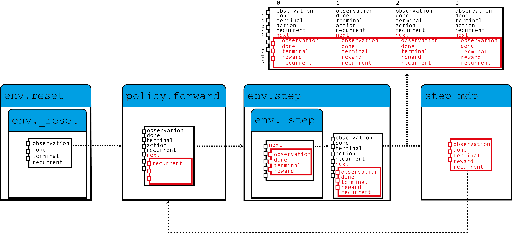

备注
点击此处下载完整示例代码
循环 DQN：训练循环策略
创建时间：2025 年 4 月 1 日 | 最后更新时间：2025 年 4 月 1 日 | 最后验证：未验证
作者：Vincent Moens
如何在 TorchRL 中将 RNN 集成到 actor 中
如何使用基于记忆的策略与重放缓冲区和损失模块
PyTorch v2.0.0
gym[mujoco]
tqdm
概述 ¶
基于记忆的策略不仅当观察部分可观测时至关重要，而且在必须考虑时间维度以做出明智决策时也是如此。
循环神经网络长期以来一直是基于记忆策略的流行工具。其理念是在两个连续步骤之间在内存中保持一个循环状态，并将其作为策略的输入，与当前观察一起使用。
本教程展示了如何使用 TorchRL 将循环神经网络（RNN）纳入策略中。
关键学习点：
在 TorchRL 中将循环神经网络（RNN）纳入 actor 中；
使用基于记忆的策略，配合重放缓冲区和损失模块。
在 TorchRL 中使用 RNN 的核心思想是利用 TensorDict 作为隐藏状态从一个步骤到另一个步骤的数据载体。我们将构建一个策略，该策略从当前的 TensorDict 中读取先前的循环状态，并将当前的循环状态写入下一个状态的 TensorDict 中：

如此图所示，我们的环境将零初始化的循环状态填充到 TensorDict 中，这些状态由策略与观察一起读取以产生一个动作，以及用于下一个步骤的循环状态。当调用 step_mdp() 函数时，下一个状态的循环状态被带到当前的 TensorDict 中。让我们看看这是如何在实际中实现的。
如果你在 Google Colab 上运行此代码，请确保安装以下依赖项：
!pip3 install torchrl
!pip3 install gym[mujoco]
!pip3 install tqdm
设置
import torch
import tqdm
from tensordict.nn import TensorDictModule as Mod, TensorDictSequential as Seq
from torch import nn
from torchrl.collectors import SyncDataCollector
from torchrl.data import LazyMemmapStorage, TensorDictReplayBuffer
from torchrl.envs import (
Compose,
ExplorationType,
GrayScale,
InitTracker,
ObservationNorm,
Resize,
RewardScaling,
set_exploration_type,
StepCounter,
ToTensorImage,
TransformedEnv,
)
from torchrl.envs.libs.gym import GymEnv
from torchrl.modules import ConvNet, EGreedyModule, LSTMModule, MLP, QValueModule
from torchrl.objectives import DQNLoss, SoftUpdate
is_fork = multiprocessing.get_start_method() == "fork"
device = (
torch.device(0)
if torch.cuda.is_available() and not is_fork
else torch.device("cpu")
)
环境
像往常一样，第一步是构建我们的环境：这有助于我们定义问题并相应地构建策略网络。在本教程中，我们将运行一个基于像素的单个 CartPole gym 环境实例，并应用一些自定义转换：转换为灰度，调整大小为 84x84，降低奖励并归一化观察值。
备注
StepCounter 转换是辅助性的。由于 CartPole 任务的目标是使轨迹尽可能长，因此计数步数可以帮助我们跟踪策略的性能。
对于本教程的目的，有两个转换很重要：
InitTracker将通过在 TensorDict 中添加一个"is_init"布尔掩码来标记对reset()的调用，该掩码将跟踪哪些步骤需要重置 RNN 隐藏状态。TensorDictPrimer转换稍微复杂一些。不需要使用 RNN 策略。但是，它指示环境（随后是收集器）预期会有一些额外的键。一旦添加，调用 env.reset() 将会使用零张量填充指南中指示的条目。知道策略会期待这些张量，收集器将在收集过程中传递它们。最终，我们将把我们的隐藏状态存储在重放缓冲区中，这将帮助我们启动损失模块中 RNN 操作的计算（否则将以 0s 启动）。总之：不包含这个转换不会对策略的训练产生巨大影响，但它会导致循环键从收集的数据和重放缓冲区中消失，这反过来又会导致训练略微不那么优化。幸运的是，我们提出的LSTMModule配备了一个辅助方法来为我们构建这样的转换，因此我们可以等待它构建完成！
env = TransformedEnv(
GymEnv("CartPole-v1", from_pixels=True, device=device),
Compose(
ToTensorImage(),
GrayScale(),
Resize(84, 84),
StepCounter(),
InitTracker(),
RewardScaling(loc=0.0, scale=0.1),
ObservationNorm(standard_normal=True, in_keys=["pixels"]),
),
)
总是，我们需要手动初始化我们的归一化常数：
env.transform[-1].init_stats(1000, reduce_dim=[0, 1, 2], cat_dim=0, keep_dims=[0])
td = env.reset()
策略 ¶
我们的政策将包含 3 个部分：一个 ConvNet 主干，一个 LSTMModule 记忆层和一个浅层 MLP 块，该块将 LSTM 输出映射到动作值。
卷积网络 ¶
我们构建了一个卷积网络，两侧有一个 torch.nn.AdaptiveAvgPool2d ，它将输出压缩成一个 64 大小的向量。 ConvNet 可以帮助我们做到这一点：
feature = Mod(
ConvNet(
num_cells=[32, 32, 64],
squeeze_output=True,
aggregator_class=nn.AdaptiveAvgPool2d,
aggregator_kwargs={"output_size": (1, 1)},
device=device,
),
in_keys=["pixels"],
out_keys=["embed"],
)
我们在一个数据批次上执行第一个模块以收集输出向量的大小：
n_cells = feature(env.reset())["embed"].shape[-1]
LSTM 模块
TorchRL 提供了一个专门的 LSTMModule 类来将 LSTM 集成到您的代码库中。它是一个 TensorDictModuleBase 子类：因此，它有一组 in_keys 和 out_keys ，这些指示在模块执行期间应读取和写入/更新的值。该类为这些属性提供了可定制的预定义值，以简化其构建。
备注
使用限制：该类支持几乎所有 LSTM 功能，如 dropout 或多层 LSTM。但是，为了遵守 TorchRL 的约定，此 LSTM 必须将 batch_first 属性设置为 True ，这在 PyTorch 中不是默认设置。然而，我们的 LSTMModule 更改了此默认行为，因此我们可以使用原生调用。
此外，LSTM 不能将 bidirectional 属性设置为 True ，因为这在线设置中不可用。在这种情况下，默认值是正确的。
lstm = LSTMModule(
input_size=n_cells,
hidden_size=128,
device=device,
in_key="embed",
out_key="embed",
)
让我们来查看 LSTM 模块类，特别是它的 in 和 out_keys：
print("in_keys", lstm.in_keys)
print("out_keys", lstm.out_keys)
我们可以看到这些值包含了我们指定的 in_key（以及 out_key）以及循环键名。out_keys 前面有一个“next”前缀，表示它们需要写入“next”TensorDict。我们使用这个约定（可以通过传递 in_keys/out_keys 参数来覆盖）以确保调用 step_mdp() 将循环状态移动到根 TensorDict，使其在随后的调用中对 RNN 可用（参见引言中的图）。
如前所述，我们还有一个可选的转换要添加到我们的环境中，以确保循环状态传递到缓冲区。 make_tensordict_primer() 方法正是这样做的：
env.append_transform(lstm.make_tensordict_primer())
就这样！现在我们添加了引导后，我们可以打印环境来检查一切是否正常：
print(env)
MLP ¬
我们使用单层 MLP 来表示我们将用于策略的动作值。
mlp = MLP(
out_features=2,
num_cells=[
64,
],
device=device,
)
并将偏置项填充为零：
mlp[-1].bias.data.fill_(0.0)
mlp = Mod(mlp, in_keys=["embed"], out_keys=["action_value"])
使用 Q 值来选择动作 ¬
我们政策的最后一部分是 Q 值模块。Q 值模块 QValueModule 将读取由我们的 MLP 产生的 "action_values" 键，并从中收集具有最大值的动作。我们唯一需要做的是指定动作空间，这可以通过传递一个字符串或动作规范来实现。这允许我们使用分类编码（有时称为“稀疏”编码）或其单热版本。
qval = QValueModule(spec=env.action_spec)
备注
TorchRL 还提供了一个包装类 torchrl.modules.QValueActor ，可以将模块包装在 Sequential 中，就像我们在这里显式做的那样。这样做几乎没有优势，而且过程不够透明，但最终结果将与我们所做的相似。
我们现在可以将事物组合到 TensorDictSequential 中
stoch_policy = Seq(feature, lstm, mlp, qval)
DQN 作为一个确定性算法，探索是其关键部分。我们将使用ε-贪婪策略，ε值为 0.2，逐渐衰减到 0。这种衰减是通过调用 step() 实现的（见下面的训练循环）。
exploration_module = EGreedyModule(
annealing_num_steps=1_000_000, spec=env.action_spec, eps_init=0.2
)
stoch_policy = Seq(
stoch_policy,
exploration_module,
)
使用模型进行损失计算
我们构建的模型非常适合在顺序环境中使用。然而，类 torch.nn.LSTM 可以使用 cuDNN 优化的后端在 GPU 设备上更快地运行 RNN 序列。我们不想错过加快训练循环的机会！要使用它，我们只需要告诉 LSTM 模块在用于损失时运行在“循环模式”。由于我们通常希望有两个 LSTM 模块的副本，我们通过调用一个 set_recurrent_mode() 方法来实现，该方法将返回一个新的 LSTM 实例（具有共享权重），该实例将假定输入数据具有顺序性质。
policy = Seq(feature, lstm.set_recurrent_mode(True), mlp, qval)
因为我们还有一些未初始化的参数，所以在创建优化器等之前应该初始化它们。
policy(env.reset())
DQN 损失
Out DQN 損失需要我们传递策略和，再次，动作空间。虽然这看起来有些冗余，但这是很重要的，因为我们想确保 DQNLoss 和 QValueModule 类是兼容的，但又不强依赖于彼此。
使用 Double-DQN 时，我们要求一个 delay_value 参数，该参数将创建一个不可微分的网络参数副本，用作目标网络。
loss_fn = DQNLoss(policy, action_space=env.action_spec, delay_value=True)
由于我们使用的是 Double DQN，我们需要更新目标参数。我们将使用一个 SoftUpdate 实例来完成这项工作。
updater = SoftUpdate(loss_fn, eps=0.95)
optim = torch.optim.Adam(policy.parameters(), lr=3e-4)
收集器和重放缓冲区
我们构建了最简单的数据收集器。我们将尝试用一百万帧来训练我们的算法，每次扩展 50 帧。缓冲区将设计为存储 2 万条轨迹，每条轨迹包含 50 个步骤。在每个优化步骤（数据收集阶段有 16 个），我们将从我们的缓冲区中收集 4 个项目，总共 200 个过渡。我们将使用 LazyMemmapStorage 存储来在磁盘上保存数据。
备注
为了提高效率，这里只运行了几千次迭代。在实际设置中，总帧数应设置为 1M。
collector = SyncDataCollector(env, stoch_policy, frames_per_batch=50, total_frames=200, device=device)
rb = TensorDictReplayBuffer(
storage=LazyMemmapStorage(20_000), batch_size=4, prefetch=10
)
训练循环
为了跟踪进度，我们将在每 50 次数据收集后运行一次策略，并在训练后绘制结果。
utd = 16
pbar = tqdm.tqdm(total=1_000_000)
longest = 0
traj_lens = []
for i, data in enumerate(collector):
if i == 0:
print(
"Let us print the first batch of data.\nPay attention to the key names "
"which will reflect what can be found in this data structure, in particular: "
"the output of the QValueModule (action_values, action and chosen_action_value),"
"the 'is_init' key that will tell us if a step is initial or not, and the "
"recurrent_state keys.\n",
data,
)
pbar.update(data.numel())
# it is important to pass data that is not flattened
rb.extend(data.unsqueeze(0).to_tensordict().cpu())
for _ in range(utd):
s = rb.sample().to(device, non_blocking=True)
loss_vals = loss_fn(s)
loss_vals["loss"].backward()
optim.step()
optim.zero_grad()
longest = max(longest, data["step_count"].max().item())
pbar.set_description(
f"steps: {longest}, loss_val: {loss_vals['loss'].item(): 4.4f}, action_spread: {data['action'].sum(0)}"
)
exploration_module.step(data.numel())
updater.step()
with set_exploration_type(ExplorationType.DETERMINISTIC), torch.no_grad():
rollout = env.rollout(10000, stoch_policy)
traj_lens.append(rollout.get(("next", "step_count")).max().item())
让我们绘制我们的结果：
if traj_lens:
from matplotlib import pyplot as plt
plt.plot(traj_lens)
plt.xlabel("Test collection")
plt.title("Test trajectory lengths")
结论 ¶
我们已经看到如何在 TorchRL 中集成 RNN。现在你应该能够：
创建一个充当
TensorDictModule的 LSTM 模块通过
InitTracker转换指示 LSTM 模块需要重置在策略和损失模块中引入此模块
确保收集器了解重复状态条目，以便它们可以与其他数据一起存储在重放缓冲区中